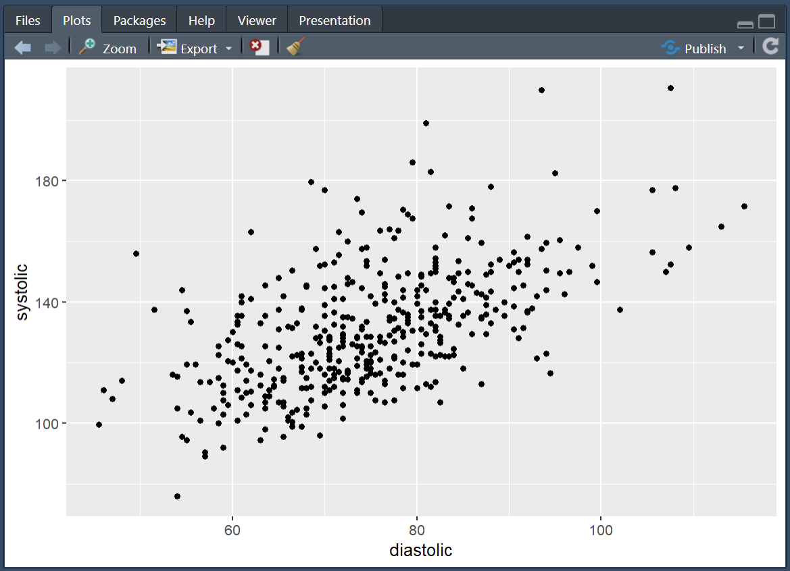
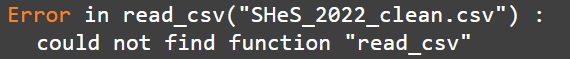

This week, I want to introduce you to the data visualisation package ggplot2 (which is contained within the tidyverse package). ggplot is an incredibly versatile way of creating graphs and has become the standard throughout academic publishing, industry, and data journalism (see bonus section at end of page for more on this last use case).
As with previous sessions we will be using your assignment dataset and, seeing as it’s a new session, it’s a good idea to go though our new session checklist again.
Please go ahead and:
Close any old scripts, clean your environment window (the little broom button) and Restart R.
Create a new R script
Save that script to your working directory
Set your working directory
Check that you are in the right working directory file.list()
Load the tidyverse package library(tidyverse)
Read in your data using read_csv()
Visualising hypertention (scatter plot)
Hypertension is the chronic diagnostic label given to people with persistently high blood pressure. Someone with hypertension can be symptomless for years, but may be at increases the risk of heart disease, stroke, kidney disease and vascular dementia.
For most adults, readings are considered high if they’re 140/90 mmHg or higher in clinic, or 135/85 mmHg or higher at home (see white coat effect). Diagnosis isn’t made on a single reading; it’s typically confirmed with 24-hour ambulatory monitoring or a series of home readings. Very high values (e.g., around 180/120 mmHg) warrant urgent clinical assessment.
In this session, we’ll use the simple clinic threshold of 140/90 mmHg to define a “hypertension” category. Then we’ll plot systolic and diastolic blood pressure to see what that diagnosis looks like in real terms.
Wrangling blood pressure data
Our first step is to tidy up our blood pressure variables in the same way as we did in the last session. See if you can identify and adapt the correct code and create the systolic and diastolic blood pressure variables. No need to worry about MAP for this part of the exercise.
Then we need to process the data using the mutate() with a case_when() function to turn the two continuous BP variables into a single categorical variable that tell us if the person is hypertensive or not.
As mentioned above, hypertension is to be defined as a systolic reading higher than 140or a diastolic reading higher than 90.
Creating a plot with ggplot() requires using a set of grammar that builds up your plot layer by layer. For now the easiest way to start a graph is to pick the dataset you want to use and pipe that into the ggplot function. Later on you may want to represent multiple datasets on the same plot, when doing so you’ll need a different grammar but for now most of your graphs will start like this:
Code
shes_bp %>%ggplot()
Running the above you’ll see a blank canvas in the bottom right hand RStudio screen. This is where we’ll build our plot. Adjusting this screen will change the size of the graph, so keep it to around a quarter of your overall screen so that your graph is viable and of a reasonable aspect ratio.
Next, as the first argument within the ggplot() function we need to set out the aesthetic. This will tell R, which variables from our dataset will appear on our graph and where/how. To set the aesthetic we need to use the aes() function and then allocate a variable to the x-axis and a variable to the y-axis.
Code
shes_bp %>%ggplot(aes(x = diastolic, y = systolic))
Running the above sets the aesthetic so that we now have our diastolic variable set to the x-axis and our systolic variable set to the y-axis.
Next we need to add another layer to our plot. To do this we use a + and hit return so that the next layer starts on the following line (note: its + not %>% when working on a ggplot(), but they both basically mean: and then)
And finally, to make the most basic version of a plot, we can layer on top a geometry, this is the type of graph that we would like to make. In this case we will use geom_point() which gives us the geometry of a scatter plot.
Code
shes_bp %>%ggplot(aes(x = diastolic, y = systolic)) +geom_point()
Running the above gives us a scatter plot where each point is an individual in our dataset located at the coordinates of their diastolic and systolic readings.

From here we can start adding to the graph to customise it. For the purposes of this graph it would be interesting to see which of our participants would get the hypertension diagnosis and which would not. We can achieve this by adding colour to our aesthetic and linking that colour to our bp_cat variable.
From this we can now see the 140/90 cut off in action.
If I were working on this figure for publication or a talk there is a lot more tidying up that I would do. Here’s what I think is a fairly good looking graph.
Have a play around with the code. One of the best ways to learn how it works is to make changes and see what changes when you run the code.
Errors are a constant part of working in R, don’t let them put you off!
They do not mean that you are bad at coding!
I’m constantly hitting errors when I code. The only skill that matters is the ability to solve errors when you hit them. Here are some tips:
Reload you packages. Especially if the error is something like this:

Take a look at the bar to the left of your script, it will often tell you the line where the error happen. That can help you spot where you went wrong. Reading through those lines may help you spot a missing ,, %>% or as in this case a +.
Read the error, if you’re really lucky it will tell you what mistake you’ve made. For instance here it suggests a == instead of a =, a very common issue when using filter().
Finally, when you really cannot work out what’s going wrong, throw the code and the error into an AI. It’ll likely be able to spot where you’ve gone wrong.
With the blood-pressure scatter plot we explored a relationship between two continuous variables and overlaid a clinical threshold. Next, we’ll look at the shape of a single variable and how that shape differs across groups. To do that, we’ll switch to WEMWBS and compare distributions by levels of deprivation (SIMD). A histogram shows the overall shape (skew, peaks, gaps); a box plot summarises medians and spread for quick comparison. Same tidy grammar, new geoms moving us from are two measures related? to how does wellbeing vary by context?.
WEMWBS (Warwick–Edinburgh Mental Wellbeing Scale). A 14-item scale that assesses mental wellbeing focusing on positive feelings and functioning; items are rated on a 5-point scale and summed to a total score (commonly 14–70). Further information and materials are available from the University of Warwick.
SIMD (Scottish Index of Multiple Deprivation). Scotland’s official tool for identifying relative deprivation of small areas (“data zones”), combining seven domains: income, employment, education, health, access to services, crime, and housing. See the Scottish Government’s SIMD pages for details and data.
Wrangling WEMWBS and SIMD data
If you completed the exercises for session 1 you have already done the majority of the wrangling here. The WEMWBS has 14 items to it. To turn the 14 items into a wellbeing score (where higher is greater wellbeing) all we need to do is add the items together.
In the exercise in session 1 I suggested you to select them out into a new data object, but really this is an unnecessary step. We can just do all of our cleaning in our original dataset and draw directly from there if we want.
And just to keep it all easy for you to see whats going on, we’ll pull the reliant variables for this section over into a separate data object.
Code
wemebs_simd_data <- shes_2022_data %>%select(id, wemwbs_score, simd20_quintile)glimpse(wemebs_simd_data) # just to see what we're working with
In session 1 we ran a quick and dirty histogram using the hist() function:
Code
hist(wemebs_simd_data$wemwbs_score)
This is fine for a brief look at the data but to get something a little more customisable we can reproduce the same graph using ggplot().
As with the scatter plot this requires us setting the aes(), layering on the appropriate geom_ and then customising the arguments to our liking.
Here is a basic version:
Code for plot
Code
# note only x-axis is needed in aes, as y-axis is a count of xwemebs_simd_data %>%ggplot(aes(x = wemwbs_score)) +geom_histogram()
Not yet as clear as the hist() but with a bit of customising it can look quite nice:
Code for plot
Code
wemebs_simd_data %>%ggplot(aes(x = wemwbs_score)) +geom_histogram(binwidth =1, colour ="black", fill ="#005A9C") +scale_x_continuous(breaks =seq(0, 70, by =5),minor_breaks =seq(0, 70, by =1)) +labs(title ="????",x ="????") +theme_light()
Take the code for the above graph and see if you can:
work out what the binwidth argument controls
try taking out binwidth, exchange for bins and see if you can work out what the bins argument controls
work out what the scale_x_continuous() function controls and why I’ve set it to this
give the figure a suitable title and x-axis label
change the colour to anything you’d like. Here is a website to help you: Colour picker
change the theme
Visulising distributions by catagorise (box plots)
There are a number of ways that we could visualise how wellbeing (WEMEBS) differs across levels of deprivation (SIMD). Personaly, I like a box plot with a violin plot to demonstrate the distribution.
The following code puts puts the continuous wellbeing variable on the x-axis and the five quintiles of deprevation on the y-axis. It then layer up two geometries: a geom_violin() and a geom_boxplot().
Code
wemebs_simd_data %>%ggplot(aes(x=wemwbs_score, y = simd20_quintile))+geom_violin() +geom_boxplot()
It also creates one of the ugliest graph I’ve ever seen.
Yuck! I’m sorry you had to see that.
So, let’s tart it up a bit.
Much better:
Code for plot
Some new arguments in here. As before play around with them and see what they change.
Note how I defined the colours in one expression and then just used the assigned colours in the ggplot(). This can save space and make things more efficient if you have multiple graphs with the same colour scheme.
First exercise for this session is to adapt the blood pressure scatter plot above to create a scatter plot that demonstrates the catagories of BMI as they relate to height and weight.
For this exercise you will need to:
create a date object that includes height and weight
calculate BMI (see session 1)
create the categorical variables associated with BMI (see session 2)
create a scatter of weight and height, with each point coloured by BMI catagories.
adapt the plot to make it look pretty
Solution
Lots of ways you could do this, here’s how I tackled it:
# fancy plotcolours <-c("underweight"="#D55E00","healthy range"="#0072B2","overweight"="#009E73","obesity"="#E69F00","severe obesity"="#CC79A7")# this reorders the catagories, to make the legend order correct# we'll be doing this more next week for logictic regressionshes_BMI <- shes_BMI %>%filter(!is.na(bmi_band)) %>%# this line removed the NAsmutate(bmi_band =factor(bmi_band,levels =c("underweight", "healthy range", "overweight", "obesity", "severe obesity")))shes_BMI %>%ggplot(aes(x = weight_kg_self_adj, y = height_cm_self_adj, colour = bmi_band)) +geom_point(alpha =0.7, size =2) +scale_colour_manual(values = colours,name ="BMI Category") +labs(x ="Weight (kg)", y ="Height (cm)", title ="Height and Weight by BMI Category",caption ="Source: Scottish Health Survey (2022)") +theme_light() +theme(legend.title =element_text(size =10),legend.text =element_text(size =9),plot.title =element_text(size =14, face ="bold"),axis.title =element_text(size =11),axis.text =element_text(size =9))
Exercise 2: Plot MAP by age catagories
For this exercise I’d like you to create a box an violin plot that shows Mean Arterial Pressure (MAP) broken down by age categories.
To create this plot you will need to:
create a data object with the blood pressure data and the age variable
calculate a MAP variable (see session 2)
create a categorical age variable (see session 2)
create a basic box plot by adapting the above wellbeing/SIMD code
tart it up a bit to make it all pretty
Solution
Code
shes_2022_data <-read_csv("SHeS_2022_clean.csv")# this code selects the datashes_bp_age <- shes_2022_data %>%select(id, age, bp_sys_omron_r3_mmhg, bp_sys_omron_r4_mmhg, bp_dia_omron_r3_mmhg, bp_dia_omron_r4_mmhg, bp_series_valid_code)# this code filters to include only valid measurementsshes_bp_age_valid <- shes_bp_age %>%filter(bp_series_valid_code =="Valid blood pressure measurement")# this code takes an average of the sys and dia readingsshes_bp_age_valid <- shes_bp_age_valid %>%mutate(systolic = ((bp_sys_omron_r3_mmhg + bp_sys_omron_r4_mmhg)/2),diastolic = ((bp_dia_omron_r3_mmhg + bp_dia_omron_r4_mmhg)/2))# this code calculates Mean Arterial Pressure ()shes_bp_age_valid <- shes_bp_age_valid %>%mutate(map = (systolic + (2* diastolic)) /3)# this code creates the age bandsshes_bp_age_valid <- shes_bp_age_valid %>%mutate(age_band =case_when(age <30~"18–29", age >=30& age <45~"30–44", age >=45& age <65~"45–64", age >=65~"65+",TRUE~NA_character_))# basic box and violin plot codeshes_bp_age_valid %>%ggplot(aes(x= map, y = age_band)) +geom_violin() +geom_boxplot()
Well done, you now have the skills to make publication quality figures.
I’m a little obsessed with data visualisation. Much of my work looks at how the public understands big societal and scientific issues such as climate change, the cost of living, and pandemics. These issues require people to update their knowledge about complex topics, and a well-designed visualisation is often essential to make information clear and accessible.
I’m a big fan of the work of the FT data journalist John Burn-Murdoch:
And he, and the FT, are not the only journalists using ggplot(). The BBC adopted ggplot a few years ago, here is their cookbook where they outline their process: BBC Visual and Data Journalism cookbook for R graphics
This is so comprehensive that it’s possible to read a BBC article, see a graph, and the go out and recreate.
They had the up-to-date data that pushed the line over 1.5C (hense news!) and there were a few bits I couldn’t recreate. But still, pretty close, right! I’d be great at creating misinformation if I wanted to!
Code for plot
Here is the code, though it wont run unless you have the associated datasets.
Code
library(tidyverse)library(bbplot)library(ggrepel)library(ggtext)annual <-read_csv("annual_averages.csv")decadal <-read_csv("decadal_averages.csv")subtitle_text <-"Global air temperature compared with pre-industraial <br> (1850-1900) levels <span style='color:salmon;'>yearly average</span> and <span style='color:darkred;'>10-year average</span>."plot2 <-ggplot() +geom_line(data = annual, aes(x=time, y=GMST), colour ="salmon", linewidth =1.15)+geom_line(data = decadal, aes(x=time, y=GMST), colour ="darkred",linewidth =1.15)+labs(title ="How the planet's temperature has risen",subtitle = subtitle_text,x ="GDP per Capita (log scale recommended)",y ="Life Expectancy (Years)") +scale_y_continuous(limits =c(-0.5, 1.5),breaks =c(-0.5, 0, 0.5, 1.0, 1.5),labels =c("-0.5°C", "pre-\nindustrial\n average", "+0.5°C","+1.0°C","+1.5°C"))+bbc_style()+theme(plot.title =element_text(size =28),plot.subtitle =element_markdown(size =22),axis.text.y =element_text(size =12, colour ="grey40"),axis.text.x =element_text(size =18, colour ="grey40"))finalise_plot(plot_name = plot2,source ="Source: Forster et al.(2025), Earth System Science Data",save_filepath ="three years left.png",width_pixels =640,height_pixels =450)
Source Code
---title: "Session 3"number-sections: false # no chapter/section numbers on this pagetoc: TRUE # (optional) hide the on-page TOCeditor_options: chunk_output_type: console---```{r}#| label: setup#| include: falsesource("R/global-setup.R")```# Data visulisation with ggplot## IntroductionThis week, I want to introduce you to the data visualisation package `ggplot2` (which is contained within the `tidyverse` package). `ggplot` is an incredibly versatile way of creating graphs and has become the standard throughout academic publishing, industry, and data journalism (see bonus section at end of page for more on this last use case).As with previous sessions we will be using your assignment dataset and, seeing as it's a new session, it's a good idea to go though our new session checklist again.Please go ahead and:1. Close any old scripts, clean your environment window (the little broom button) and Restart R.2. Create a new R script3. Save that script to your working directory4. Set your working directory5. Check that you are in the right working directory `file.list()`6. Load the tidyverse package `library(tidyverse)`7. Read in your data using `read_csv()`## Visualising hypertention (scatter plot)Hypertension is the chronic diagnostic label given to people with persistently high blood pressure. Someone with hypertension can be symptomless for years, but may be at increases the risk of heart disease, stroke, kidney disease and vascular dementia. For most adults, readings are considered high if they’re 140/90 mmHg or higher in clinic, or 135/85 mmHg or higher at home (see [white coat effect](https://en.wikipedia.org/wiki/White_coat_hypertension)). Diagnosis isn’t made on a single reading; it’s typically confirmed with 24-hour ambulatory monitoring or a series of home readings. Very high values (e.g., around 180/120 mmHg) warrant urgent clinical assessment.In this session, we’ll use the simple clinic threshold of 140/90 mmHg to define a “hypertension” category. Then we'll plot systolic and diastolic blood pressure to see what that diagnosis looks like in real terms. ### Wrangling blood pressure dataOur first step is to tidy up our blood pressure variables in the same way as we did in the last session. See if you can identify and adapt the correct code and create the systolic and diastolic blood pressure variables. No need to worry about MAP for this part of the exercise.Then we need to process the data using the `mutate()` with a `case_when()` function to turn the two continuous BP variables into a single categorical variable that tell us if the person is hypertensive or not.As mentioned above, hypertension is to be defined as a systolic reading higher than `140` **or** a diastolic reading higher than `90`. ::: {.callout-tip collapse="true"}### Solution```{r, eval=FALSE}# Step 1shes_bp <- shes_2022_data %>%select(id, bp_sys_omron_r3_mmhg, bp_sys_omron_r4_mmhg, bp_dia_omron_r3_mmhg, bp_dia_omron_r4_mmhg, bp_series_valid_code) %>%filter(bp_series_valid_code =="Valid blood pressure measurement") %>%mutate(systolic = ((bp_sys_omron_r3_mmhg + bp_sys_omron_r4_mmhg)/2),diastolic = ((bp_dia_omron_r3_mmhg + bp_dia_omron_r4_mmhg)/2))# Step 2shes_bp <- shes_bp %>%mutate(bp_cat =case_when(systolic >=140| diastolic >=90~"hypertensive", systolic <140| diastolic <90~"not hypertensive",TRUE~NA_character_))```Due to there only being two categories another way to solve step to would be with an `if_else` statement.`r webexercises::hide("if_else()")````{r, eval=FALSE}shes_bp <- shes_bp %>%mutate(bp_cat =if_else(systolic >=140& diastolic >=90, "hypertensive","not hypertensive"))```The first argument in `if_else()` outlines the parameters for `TRUE`, the second argument labels for `TRUE` the third labels for `FALSE``r webexercises::unhide()`:::And final just to tidy up our dataset we can drop the variables that we don't need.```{r, eval=FALSE}shes_bp <- shes_bp %>%select(id, systolic, diastolic, bp_cat)# ORshes_bp <- shes_bp %>%select(-bp_sys_omron_r3_mmhg, -bp_sys_omron_r4_mmhg, -bp_dia_omron_r3_mmhg,-bp_dia_omron_r4_mmhg, -bp_series_valid_code)```### Plotting blood pressure dataCreating a plot with `ggplot()` requires using a set of grammar that builds up your plot layer by layer. For now the easiest way to start a graph is to pick the dataset you want to use and **pipe** that into the ggplot function. Later on you may want to represent multiple datasets on the same plot, when doing so you'll need a different grammar but for now most of your graphs will start like this:```{r, eval=FALSE}shes_bp %>%ggplot()```Running the above you'll see a blank canvas in the bottom right hand RStudio screen. This is where we'll build our plot. Adjusting this screen will change the size of the graph, so keep it to around a quarter of your overall screen so that your graph is viable and of a reasonable aspect ratio. Next, as the first argument within the `ggplot()` function we need to set out the **aesthetic**. This will tell R, which variables from our dataset will appear on our graph and where/how. To set the aesthetic we need to use the `aes()` function and then allocate a variable to the x-axis and a variable to the y-axis. ```{r,eval=FALSE}shes_bp %>%ggplot(aes(x = diastolic, y = systolic))```Running the above sets the aesthetic so that we now have our `diastolic` variable set to the x-axis and our `systolic` variable set to the y-axis. Next we need to add another layer to our plot. To do this we use a `+` and hit return so that the next layer starts on the following line (note: its `+` not `%>%` when working on a `ggplot()`, but they both basically mean: **and then**) And finally, to make the most basic version of a plot, we can layer on top a **geometry**, this is the type of graph that we would like to make. In this case we will use `geom_point()` which gives us the geometry of a scatter plot. ```{r,eval=FALSE}shes_bp %>%ggplot(aes(x = diastolic, y = systolic)) +geom_point()```Running the above gives us a scatter plot where each point is an individual in our dataset located at the coordinates of their `diastolic` and `systolic` readings. From here we can start adding to the graph to customise it. For the purposes of this graph it would be interesting to see which of our participants would get the hypertension diagnosis and which would not. We can achieve this by adding colour to our aesthetic and linking that colour to our `bp_cat` variable. ```{r, eval=FALSE}shes_bp %>%ggplot(aes(x = diastolic, y = systolic, colour = bp_cat)) +geom_point()```From this we can now see the 140/90 cut off in action. If I were working on this figure for publication or a talk there is a lot more tidying up that I would do. Here's what I think is a fairly good looking graph. Have a play around with the code. One of the best ways to learn how it works is to make changes and see what changes when you run the code. ```{r, eval=FALSE}shes_bp %>%ggplot(aes(x = diastolic, y = systolic, colour = bp_cat)) +geom_point(alpha =0.7, size =1.5) +scale_colour_manual(values =c("darkred", "darkblue"),labels =c("Hypertensive", "Not Hypertensive")) +labs(x ="Diastolic (mmHg)", y ="Systolic (mmHg)", colour ="",title ="Figure 1",subtitle ="Hypertension threshold at 140 / 90 mmHg",caption ="Source: Scottish Health Survey (2022)") +theme_light() +theme(legend.position ="bottom",legend.box.spacing =unit(0, "pt"),legend.margin =margin(t =0),plot.margin =margin(5, 5, 5, 5))````r webexercises::hide("Don't fear errors!")`Errors are a constant part of working in R, don't let them put you off!They do not mean that you are *bad at coding*! I'm constantly hitting errors when I code. The only skill that matters is the ability to solve errors when you hit them. Here are some tips:1. Reload you packages. Especially if the error is something like this:2. Take a look at the bar to the left of your script, it will often tell you the line where the error happen. That can help you spot where you went wrong. Reading through those lines may help you spot a missing `,`, `%>%` or as in this case a `+`. 3. Read the error, if you're really lucky it will tell you what mistake you've made. For instance here it suggests a `==` instead of a `=`, a very common issue when using `filter()`. 4. Finally, when you really cannot work out what's going wrong, throw the code and the error into an AI. It'll likely be able to spot where you've gone wrong. For more on working with the AI to solve errors I recommend taking a look at the [University of Glasgow PsyTeachR resources](https://psyteachr.github.io/AITutoR/04-errors.html)`r unhide()`## Visualising WEMWBS by SIMD (distribution plots)With the blood-pressure scatter plot we explored a relationship between two continuous variables and overlaid a clinical threshold. Next, we’ll look at the shape of a single variable and how that shape differs across groups. To do that, we’ll switch to WEMWBS and compare distributions by levels of deprivation (SIMD). A histogram shows the overall shape (skew, peaks, gaps); a box plot summarises medians and spread for quick comparison. Same tidy grammar, new geoms moving us from *are two measures related?* to *how does wellbeing vary by context?*.**WEMWBS (Warwick–Edinburgh Mental Wellbeing Scale).**A 14-item scale that assesses mental wellbeing focusing on positive feelings and functioning; items are rated on a 5-point scale and summed to a total score (commonly 14–70). Further information and materials are available from the [University of Warwick](https://warwick.ac.uk/services/innovations/wemwbs/).**SIMD (Scottish Index of Multiple Deprivation).**Scotland’s official tool for identifying relative deprivation of small areas (“data zones”), combining seven domains: income, employment, education, health, access to services, crime, and housing. See the [Scottish Government’s SIMD](https://www.gov.scot/collections/scottish-index-of-multiple-deprivation-2020/) pages for details and data.### Wrangling WEMWBS and SIMD dataIf you completed the exercises for session 1 you have already done the majority of the wrangling here. The WEMWBS has 14 items to it. To turn the 14 items into a wellbeing score (where higher is greater wellbeing) all we need to do is add the items together. In the exercise in session 1 I suggested you to select them out into a new data object, but really this is an unnecessary step. We can just do all of our cleaning in our original dataset and draw directly from there if we want. ```{r, eval=FALSE}shes_2022_data <- shes_2022_data %>%mutate(wemwbs_score = wemwbs_optimistic + wemwbs_useful + wemwbs_relaxed + wemwbs_interested_in_people + wemwbs_energy + wemwbs_dealing_problems + wemwbs_thinking_clearly + wemwbs_good_about_self + wemwbs_close_to_others + wemwbs_confident + wemwbs_make_up_mind + wemwbs_loved + wemwbs_interested_in_new_things + wemwbs_cheerful)```And just to keep it all easy for you to see whats going on, we'll pull the reliant variables for this section over into a separate data object.```{r, eval=FALSE}wemebs_simd_data <- shes_2022_data %>%select(id, wemwbs_score, simd20_quintile)glimpse(wemebs_simd_data) # just to see what we're working with```In session 1 we ran a quick and dirty histogram using the `hist()` function:```{r, eval=FALSE}hist(wemebs_simd_data$wemwbs_score)```This is fine for a brief look at the data but to get something a little more customisable we can reproduce the same graph using `ggplot()`. As with the scatter plot this requires us setting the `aes()`, layering on the appropriate `geom_` and then customising the arguments to our liking. Here is a basic version:::: {.callout-tip collapse="true"}### Code for plot```{r, eval=FALSE}# note only x-axis is needed in aes, as y-axis is a count of xwemebs_simd_data %>%ggplot(aes(x = wemwbs_score)) +geom_histogram()```:::Not yet as clear as the `hist()` but with a bit of customising it can look quite nice:::: {.callout-tip collapse="true"}### Code for plot```{r, eval=FALSE}wemebs_simd_data %>%ggplot(aes(x = wemwbs_score)) +geom_histogram(binwidth =1, colour ="black", fill ="#005A9C") +scale_x_continuous(breaks =seq(0, 70, by =5),minor_breaks =seq(0, 70, by =1)) +labs(title ="????",x ="????") +theme_light()```:::Take the code for the above graph and see if you can:1. work out what the `binwidth` argument controls2. try taking out `binwidth`, exchange for `bins` and see if you can work out what the `bins` argument controls 3. work out what the `scale_x_continuous()` function controls and why I've set it to this4. give the figure a suitable title and x-axis label5. change the colour to anything you'd like. Here is a website to help you: [Colour picker](https://htmlcolorcodes.com/)6. change the theme### Visulising distributions by catagorise (box plots)There are a number of ways that we could visualise how wellbeing (WEMEBS) differs across levels of deprivation (SIMD). Personaly, I like a box plot with a violin plot to demonstrate the distribution. The following code puts puts the continuous wellbeing variable on the x-axis and the five quintiles of deprevation on the y-axis. It then layer up two geometries: a `geom_violin()` and a `geom_boxplot()`. ```{r, eval=FALSE}wemebs_simd_data %>%ggplot(aes(x=wemwbs_score, y = simd20_quintile))+geom_violin() +geom_boxplot()```It also creates one of the ugliest graph I've ever seen.`r webexercises::hide("Click for ugly graph")`Yuck! I'm sorry you had to see that.`r unhide()`So, let's tart it up a bit.Much better:::: {.callout-tip collapse="true"}### Code for plotSome new arguments in here. As before play around with them and see what they change. Note how I defined the colours in one expression and then just used the assigned `colours` in the `ggplot()`. This can save space and make things more efficient if you have multiple graphs with the same colour scheme.```{r, eval=FALSE}colours <-c("Most deprived (Q1)"="#D55E00","Q2"="#0072B2","Q3"="#009E73","Q4"="#E69F00","least deprived (Q5)"="#CC79A7")wemebs_simd_data %>%ggplot(aes(x = wemwbs_score, y = simd20_quintile)) +geom_violin(aes(fill = simd20_quintile),trim =FALSE, alpha =0.5, width =0.9, orientation ="y") +geom_boxplot(width =0.15, outlier.alpha =0.4, orientation ="y") +scale_y_discrete(limits =c("Most deprived (Q1)", "Q2", "Q3", "Q4", "least deprived (Q5)")) +scale_x_continuous(breaks =seq(0, 70, by =10)) +scale_fill_manual(values = colours)+labs(title ="Distribution of WEMWBS Scores Across Deprivation Quintiles",y ="SIMD Quintile", x ="WEMWBS total") +theme_light() +theme(legend.position ="none")```:::## Take home exercises### Exercise 1: Plot weight, hight and BMI catagoriesFirst exercise for this session is to adapt the blood pressure scatter plot above to create a scatter plot that demonstrates the catagories of BMI as they relate to height and weight. For this exercise you will need to:- create a date object that includes height and weight- calculate BMI (see session 1)- create the categorical variables associated with BMI (see session 2)- create a scatter of weight and height, with each point coloured by BMI catagories.- adapt the plot to make it look pretty::: {.callout-tip collapse="true"}### SolutionLots of ways you could do this, here's how I tackled it:```{r, eval=FALSE}# load packageslibrary(tidyverse)# read in datashes_2022_data <-read_csv("SHeS_2022_clean.csv")# create continuious BMI variable shes_BMI <- shes_2022_data %>%select(id, height_cm_self_adj, weight_kg_self_adj) %>%mutate(bmi = weight_kg_self_adj / ((height_cm_self_adj /100) ^2))# create BMI catagorical variablesshes_BMI <- shes_BMI %>%mutate(bmi_band =case_when(bmi <18.5~"underweight", bmi >=18.5& bmi <25~"healthy range", bmi >=25& bmi <30~"overweight", bmi >=30& bmi <40~"obesity", bmi >=40~"severe obesity",TRUE~NA_character_))# basic plotshes_BMI %>%ggplot(aes(x = weight_kg_self_adj, y = height_cm_self_adj, colour = bmi_band)) +geom_point()``````{r, eval=FALSE}# fancy plotcolours <-c("underweight"="#D55E00","healthy range"="#0072B2","overweight"="#009E73","obesity"="#E69F00","severe obesity"="#CC79A7")# this reorders the catagories, to make the legend order correct# we'll be doing this more next week for logictic regressionshes_BMI <- shes_BMI %>%filter(!is.na(bmi_band)) %>%# this line removed the NAsmutate(bmi_band =factor(bmi_band,levels =c("underweight", "healthy range", "overweight", "obesity", "severe obesity")))shes_BMI %>%ggplot(aes(x = weight_kg_self_adj, y = height_cm_self_adj, colour = bmi_band)) +geom_point(alpha =0.7, size =2) +scale_colour_manual(values = colours,name ="BMI Category") +labs(x ="Weight (kg)", y ="Height (cm)", title ="Height and Weight by BMI Category",caption ="Source: Scottish Health Survey (2022)") +theme_light() +theme(legend.title =element_text(size =10),legend.text =element_text(size =9),plot.title =element_text(size =14, face ="bold"),axis.title =element_text(size =11),axis.text =element_text(size =9))```:::### Exercise 2: Plot MAP by age catagoriesFor this exercise I'd like you to create a box an violin plot that shows Mean Arterial Pressure (MAP) broken down by age categories.To create this plot you will need to:- create a data object with the blood pressure data and the age variable- calculate a MAP variable (see session 2)- create a categorical age variable (see session 2)- create a basic box plot by adapting the above wellbeing/SIMD code- tart it up a bit to make it all pretty::: {.callout-tip collapse="true"}### Solution```{r, eval=FALSE}shes_2022_data <-read_csv("SHeS_2022_clean.csv")# this code selects the datashes_bp_age <- shes_2022_data %>%select(id, age, bp_sys_omron_r3_mmhg, bp_sys_omron_r4_mmhg, bp_dia_omron_r3_mmhg, bp_dia_omron_r4_mmhg, bp_series_valid_code)# this code filters to include only valid measurementsshes_bp_age_valid <- shes_bp_age %>%filter(bp_series_valid_code =="Valid blood pressure measurement")# this code takes an average of the sys and dia readingsshes_bp_age_valid <- shes_bp_age_valid %>%mutate(systolic = ((bp_sys_omron_r3_mmhg + bp_sys_omron_r4_mmhg)/2),diastolic = ((bp_dia_omron_r3_mmhg + bp_dia_omron_r4_mmhg)/2))# this code calculates Mean Arterial Pressure ()shes_bp_age_valid <- shes_bp_age_valid %>%mutate(map = (systolic + (2* diastolic)) /3)# this code creates the age bandsshes_bp_age_valid <- shes_bp_age_valid %>%mutate(age_band =case_when(age <30~"18–29", age >=30& age <45~"30–44", age >=45& age <65~"45–64", age >=65~"65+",TRUE~NA_character_))# basic box and violin plot codeshes_bp_age_valid %>%ggplot(aes(x= map, y = age_band)) +geom_violin() +geom_boxplot()``````{r, eval=FALSE}# pretty graph codecolours <-c("65+"="darkred","45–64"="darkblue","30–44"="darkgreen","18–29"="salmon")shes_bp_age_valid %>%ggplot(aes(x = map, y = age_band)) +geom_violin(aes(fill = age_band),trim =FALSE, alpha =0.8, width =0.9, orientation ="y") +geom_boxplot(width =0.15, outlier.alpha =0.4, orientation ="y") +scale_x_continuous(breaks =seq(0, 180, by =10)) +scale_fill_manual(values = colours)+labs(title ="Distribution of MAP Scores across Age",y ="Age Bands", x ="Mean Arterial Pressure (MAP)") +theme_light() +theme(legend.position ="none")```:::## Bonus section: BBC News articles use ggplot Well done, you now have the skills to make publication quality figures. I’m a little obsessed with data visualisation. Much of my work looks at how the public understands big societal and scientific issues such as climate change, the cost of living, and pandemics. These issues require people to update their knowledge about complex topics, and a well-designed visualisation is often essential to make information clear and accessible.I’m a big fan of the work of the FT data journalist John Burn-Murdoch:[All made with R and ggplot](https://cloud.rstudio.com/authors/john-burn-murdoch/)And he, and the FT, are not the only journalists using `ggplot()`. The BBC adopted ggplot a few years ago, here is their *cookbook* where they outline their process: [BBC Visual and Data Journalism cookbook for R graphics](https://bbc.github.io/rcookbook/)This is so comprehensive that it's possible to **read a BBC article**, **see a graph**, and the go out **and recreate**. So that's what I decided to do!Here is the article: [Three years left to limit warming to 1.5C, leading scientists warn](https://www.bbc.co.uk/news/articles/cn4l927dj5zo)Here is their plot:And here is my attempt at recreating it:They had the up-to-date data that pushed the line over 1.5C (hense news!) and there were a few bits I couldn't recreate. But still, pretty close, right! I'd be great at creating misinformation if I wanted to!::: {.callout-tip collapse="true"}### Code for plotHere is the code, though it wont run unless you have the associated datasets. ```{r, eval=FALSE}library(tidyverse)library(bbplot)library(ggrepel)library(ggtext)annual <-read_csv("annual_averages.csv")decadal <-read_csv("decadal_averages.csv")subtitle_text <-"Global air temperature compared with pre-industraial <br> (1850-1900) levels <span style='color:salmon;'>yearly average</span> and <span style='color:darkred;'>10-year average</span>."plot2 <-ggplot() +geom_line(data = annual, aes(x=time, y=GMST), colour ="salmon", linewidth =1.15)+geom_line(data = decadal, aes(x=time, y=GMST), colour ="darkred",linewidth =1.15)+labs(title ="How the planet's temperature has risen",subtitle = subtitle_text,x ="GDP per Capita (log scale recommended)",y ="Life Expectancy (Years)") +scale_y_continuous(limits =c(-0.5, 1.5),breaks =c(-0.5, 0, 0.5, 1.0, 1.5),labels =c("-0.5°C", "pre-\nindustrial\n average", "+0.5°C","+1.0°C","+1.5°C"))+bbc_style()+theme(plot.title =element_text(size =28),plot.subtitle =element_markdown(size =22),axis.text.y =element_text(size =12, colour ="grey40"),axis.text.x =element_text(size =18, colour ="grey40"))finalise_plot(plot_name = plot2,source ="Source: Forster et al.(2025), Earth System Science Data",save_filepath ="three years left.png",width_pixels =640,height_pixels =450)```:::